ADITI NETI
Bio-Interfaces
is an exploratory and speculative project that facilitates tangible interactions through
plants as mediating interfaces. It explores how every human’s inherent biophilia can be utilised to enable
further opportunities for human-plant communication and connection.
speculative design,
physical computing,
interactive experiences
LASALLE College of the Arts
2022-23
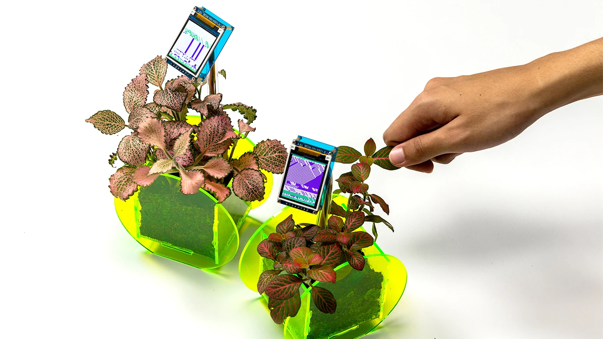
BRIEF
As part of a year-long final year project, I built and elaborated on a specific design interest. I was free to
explore and investigate any topic of personal curiousity through a communication design lens.
As part of the Computation in Design atelier, my aim was to create a body of work as part of the project that
utilises computational processes and creative technology.
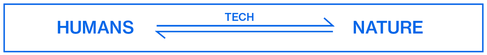
CONCEPT
Here's a fact: there is a current dichotomy between nature and technology in today’s world, caused by
sustainability issues, increased time spent on screens and urban developement. How can we reinforce a positive
relationship between humans and nature, and could we view this through an interaction lens?
Bio-Interfaces is an exploratory and speculative project that facilitates tangible interactions through plants
as mediating interfaces. It explores how every human’s inherent biophilia can be utilised to enable further
opportunities for human-plant communication and connection. Ultimately, how can more poetic and nurturing
mindsets towards nature be encouraged?
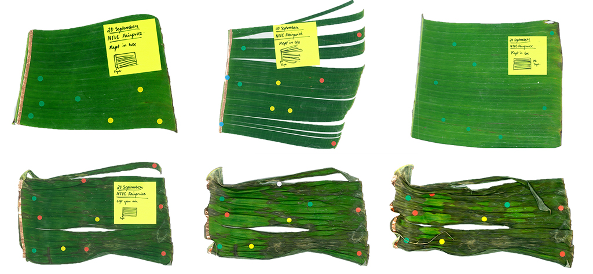
METHODOLOGY
This research takes the format of a critical journal led by experimental and explorative strategies and
supported by notions of discursive design and speculative thinking. Primary research consisted of interviews,
surveys and observation exercises.
The most fundamental methodology used within this critical journal framework was the creation of a series of
experiments that developed Living Media Interfaces based on insights gathered from primary research.
This methodology of conducting experiments emphasises the value of the process and developing a thorough
understanding of the subject matter, driven by motives of inherent curiosity.
CATALOGUE OF MAKING
The project began with a series of experiments looking into various manifestations of tangible human-plant
interactions, documented in a Catalogue of Making. This highlights the aspect of reflection via a meaning-making
process, with every iteration resulting in more thorough comprehension of the artefact subject, interactive
system, and relevant interrelationships.
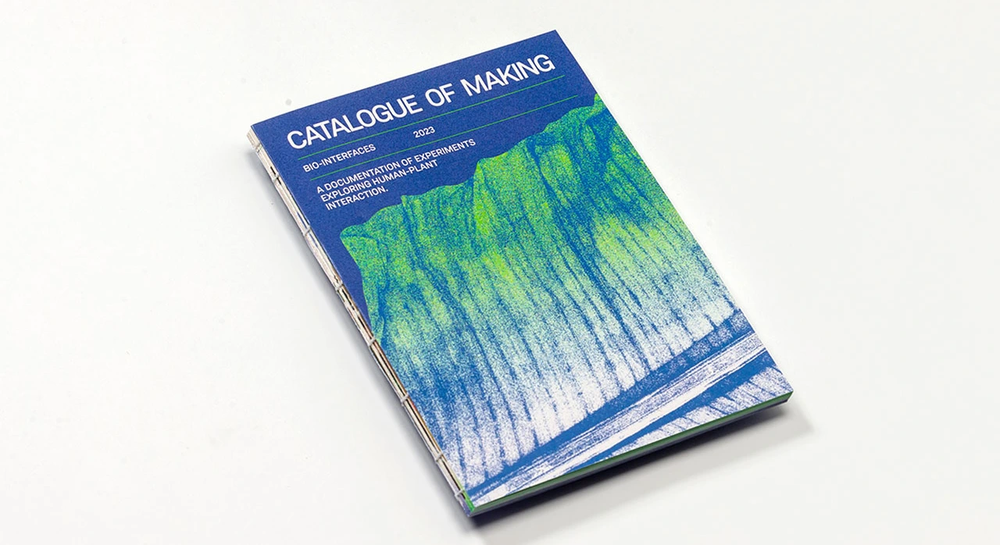
PROTOTYPES
Thorough experimentation in the Catalogue of Making led to the development of two prototypes that faciliated
tangible contact with plants and visualised it in different manners. These prototypes are documented in a video.
HUMAN + PLANT +AXIDRAW
This first prototype aims to discover ways to create meaningful and personal connections with nature via
Human-Plant Interaction.
One way to do so is by humanising or attributing some level of
sentience to the plants, explored through the physical representation of a visual language, something akin to a
human using handwriting to communicate or express themself.
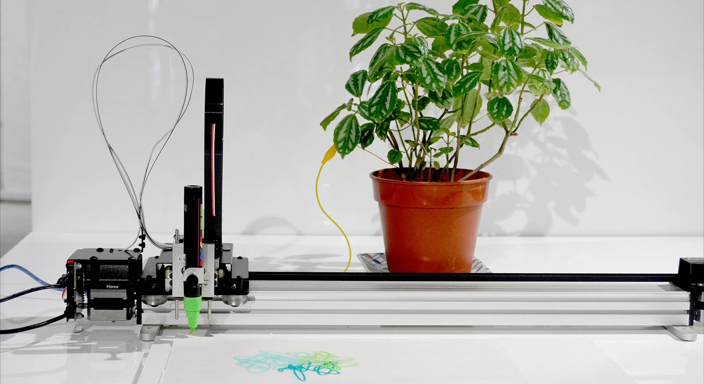
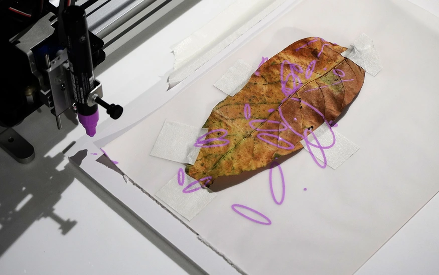
It consists of a plant connected to a pen plotter. When you touch the plant, the axidraw moves in response,
drawing ellipses. The more intensity you touch the plant with, the larger the ellipse, and vice versa. This sets
up a dialogue or conversation where you and the plant are responding to each other.
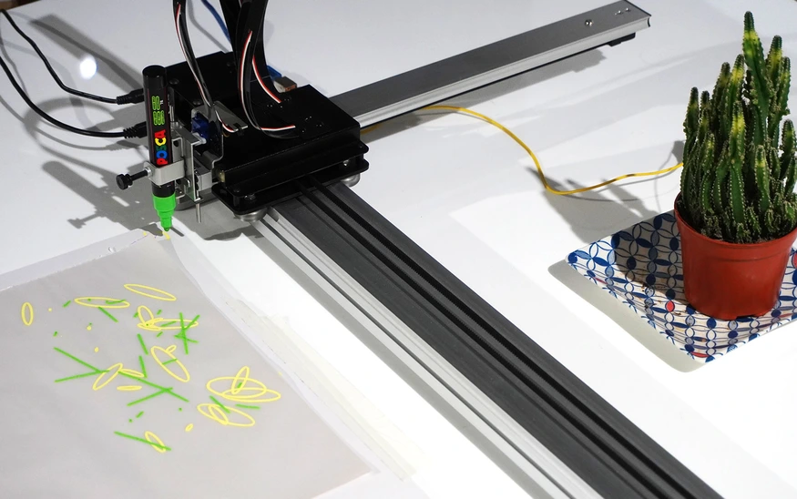
LOOSE LEAF ZINE
These instances of human + plant + axidraw collaborations were user tested amongst friends and peers and were
documented in a loose-leaf zine.
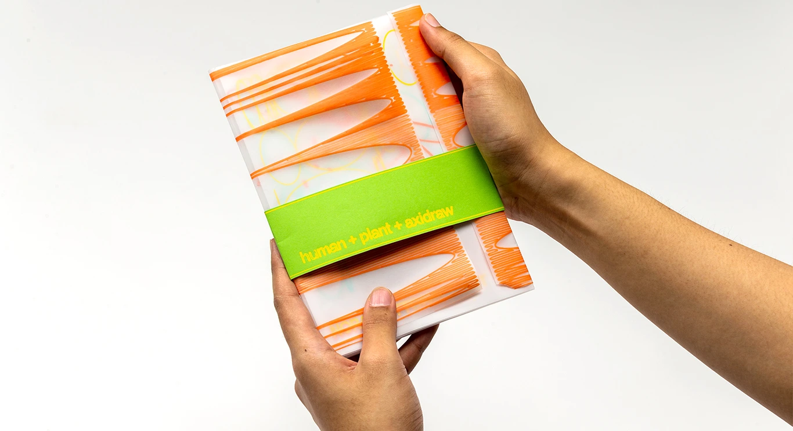
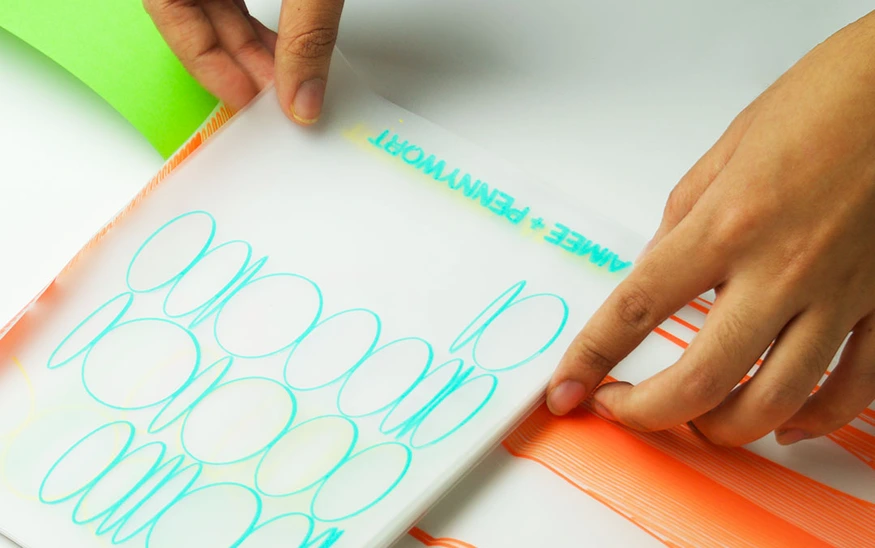
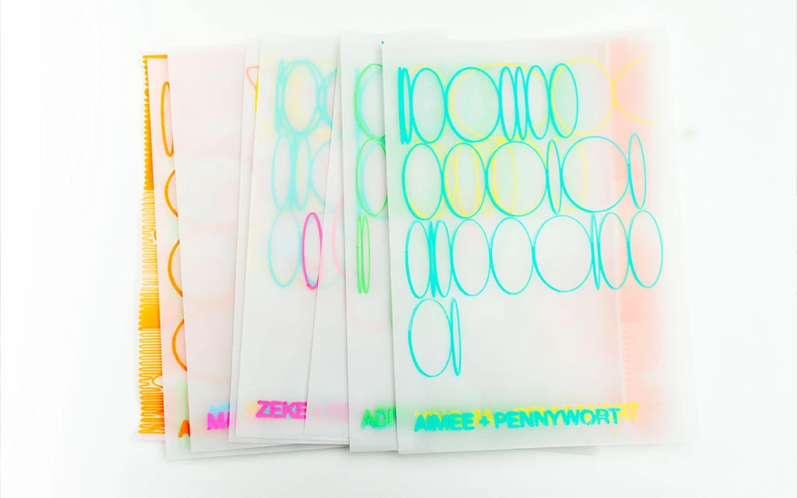
CELLULAR AUTOMATA
This second prototype takes an algorithmic approach to visualising Human-Plant Interactions in order to lay a
foundation for new means of communication.
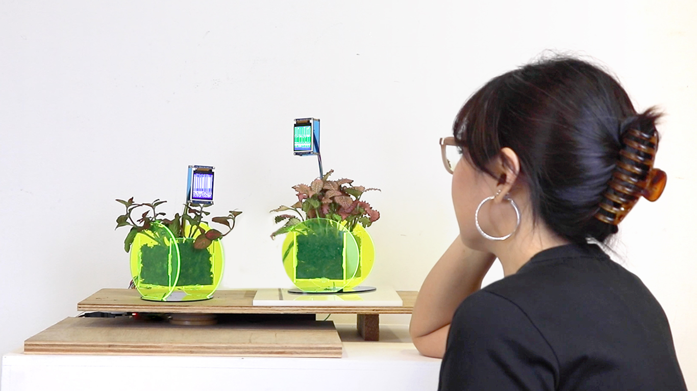
The chosen algorithmic pattern, cellular automata, is naturally occurring in nature and also has applications in
computer science and engineering. Therefore, it sufficiently represents a shared phenomenon between the entities
of nature and technology.
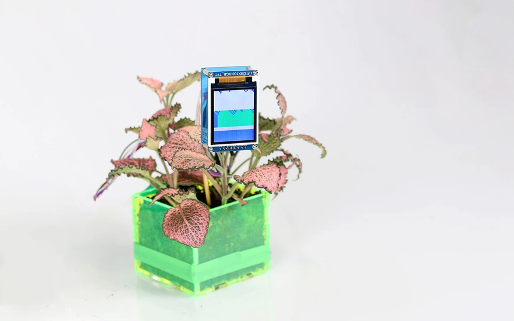
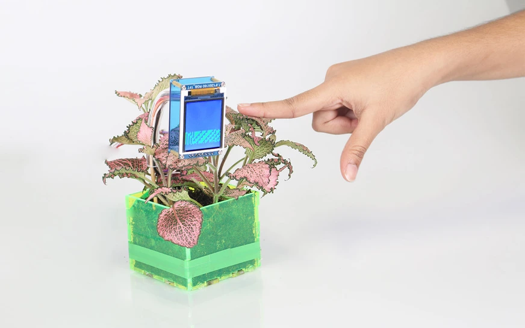
Over time, perhaps the generated cellular automata patterns can develop strains of predictability with certain
instigated touches, and therefore form a language.
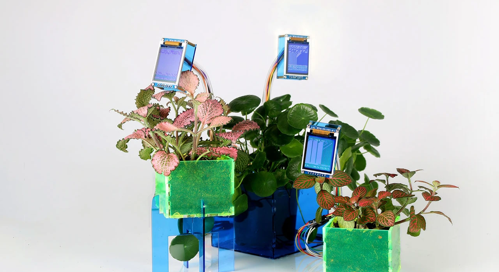
functionditi@gmail.com
+65 96100952
© Aditi Neti 2023